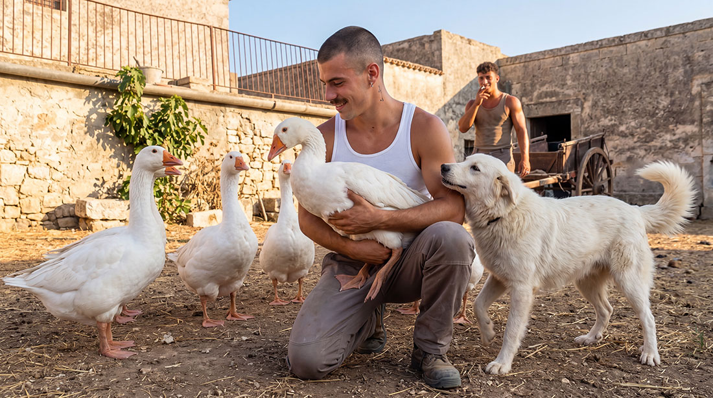
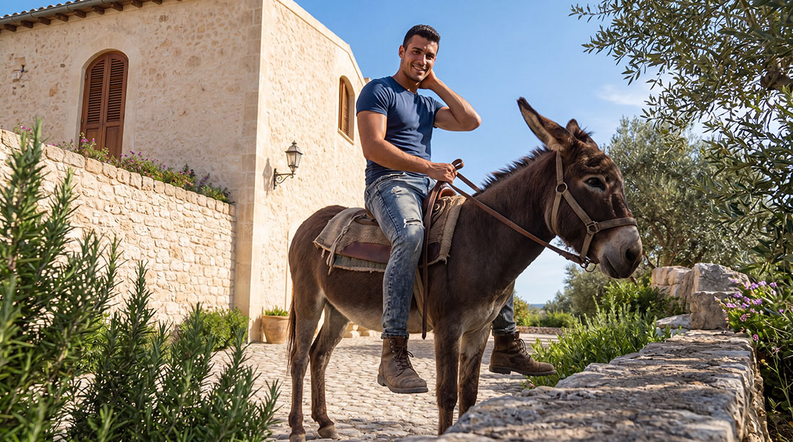

Nel Baglio San Michele gli animali domestici rappresentano un elemento naturale e prezioso della vita quotidiana, radicato nella tradizione delle masserie siciliane. Cani, gatti, pollame e piccoli animali da cortile arricchiscono l’ambiente familiare, educano i bambini alla cura e alla responsabilità, e contribuiscono alla serenità di un’esistenza lenta e autentica, in armonia con il creato e con la comunità.
Principio generale

Chiunque può tenere animali domestici, a condizione che non rechino disturbo ai vicini e rispettino le esigenze di convivenza pacifica previste dal Regolamento interno. La comunità accoglie con favore la presenza degli animali come opportunità educativa, di compagnia e di legame con la terra, nel rispetto della quiete e del benessere collettivo.
Tipologie di animali e regole specifiche
Cani e gatti
Benvenuti senza limitazioni numeriche particolari. Sono ammessi liberamente negli spazi privati e, con buon senso, anche in quelli comuni, purché non creino disagio agli altri residenti. Solo per animali potenzialmente pericolosi potrà essere richiesto l’uso del guinzaglio o misure di contenimento aggiuntive, valutate caso per caso dal Capitolo dei Savi.

Animali da cortile
Galline, conigli, anatre, oche e simili sono consentiti prioritariamente nelle unità con lotto privato (Fase 2) o in spazi dedicati. Negli appartamenti del Baglio storico è possibile su autorizzazione del Capitolo dei Savi, valutando l’impatto sulla convivenza. Gli animali già presenti negli spazi comuni del Baglio (orti, aree produttive) sono gestiti collettivamente per il beneficio di tutta la comunità.

Altri animali
Valutati caso per caso in base alle attività zootecniche e al principio di autosufficienza, sempre in linea con la tradizione rurale siciliana.
Benefici educativi e comunitari
La convivenza con gli animali offre numerosi vantaggi concreti, pienamente coerenti con la visione del Baglio San Michele come comunità intenzionale tradizionale orientata alla stabilità familiare e alla trasmissione intergenerazionale di valori.
Per i bambini rappresenta un’opportunità insostituibile di apprendimento pratico: cura quotidiana, rispetto dei ritmi naturali, comprensione del ciclo della vita e sviluppo del senso di responsabilità. I più piccoli crescono a contatto diretto con la natura, imparando gesti semplici ma formativi come dare il mangime alle galline o accarezzare un cane, esperienze che integrano e arricchiscono l’educazione familiare.
Dal punto di vista comunitario, gli animali rafforzano i legami tra generazioni: gli anziani trasmettono saperi tradizionali sulla gestione del pollame o sulla cura degli animali da cortile, mentre le giovani famiglie apportano energia e nuove attenzioni. Inoltre, contribuiscono al modello di autosufficienza alimentare della comunità, producendo uova fresche, carne di qualità o semplicemente controllando naturalmente parassiti negli orti.
Questa dimensione rurale autentica è uno degli aspetti che distinguono il Baglio San Michele da contesti urbani o turistici, offrendo una vita più completa e radicata nel territorio ibleo.
Responsabilità e buone pratiche
La convivenza serena si basa sulla responsabilità individuale e sulla reciproca attenzione. Ogni famiglia cura i propri animali garantendone il benessere e l’integrazione armoniosa nella vita del Baglio.
Si privilegia il dialogo diretto tra vicini in caso di eventuali inconvenienti, intervenendo con buon senso e spirito di collaborazione. Il Capitolo dei Savi è disponibile a supportare la mediazione qualora necessario, sempre nel rispetto della libertà familiare e della tradizione di buon vicinato tipica delle comunità rurali siciliane.
Gli animali possono partecipare naturalmente alla routine quotidiana, contribuendo all’atmosfera rurale e familiare del Baglio: passeggiate nei campi, presenza nei cortili, interazioni con i bambini negli spazi comuni.
Gli animali domestici al Baglio San Michele non sono un accessorio, ma parte viva di una comunità che ha scelto di vivere in armonia con la natura, la tradizione e i valori cristiani che da sempre ispirano il nostro progetto.
Se condividete questa visione e desiderate far parte di una realtà in cui anche gli animali trovano il loro spazio naturale, vi invitiamo a candidarvi o a contattarci per ulteriori informazioni.
Per le domande più frequenti sugli animali domestici consulta la pagina FAQ.
Vuoi saperne di più?
Contattaci per approfondire le regole e le possibilità legate agli animali domestici al Baglio San Michele.